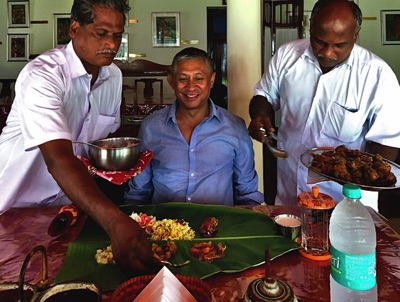
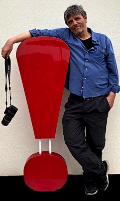

KASHBA Asiatica
Ais Loupatty
Adres
Staalstraat 6, 1011 JL Amsterdam
Openingstijden
Open: 12:00 – 17:00
Zondag: 14:00 – 17:00
Gesloten: 9 Maart – 2 April
Contact

Over Ons
Kashba begon in het begin van de jaren zestig, toen de allereerste Afghaanse jassen naar Amsterdam werden gebracht.
Sindsdien hebben wij uitgebreid gereisd en selecteren wij onze eigen import uit landen in heel Azië, voornamelijk uit India, Nepal, Tibet en China.
Onze belangrijkste criteria zijn kwaliteit en authenticiteit, ongeacht de leeftijd.
Met deze website geven wij een indruk van onze collectie en geschiedenis.
Wanneer men naar een prachtig kunstwerk kijkt, vraagt men zich af hoe en waar het is gemaakt. Vanaf het allereerste begin hebben wij foto’s gemaakt, waarvan u er hier vele kunt vinden. Hoe meer u weet, hoe meer u ziet.
Kom gerust bij ons langs of stuur ons een e-mail als u vragen heeft. In de loop der jaren hebben wij geleerd om niet via de website te verkopen. Helaas zijn er te veel tijdrovende overlast en onserieuze mensen.
Natuurlijk blijft een algemene, introductieve e-mail mogelijk. Maar wij zullen alleen reageren als u zich correct voorstelt en als wij ervan overtuigd zijn dat u werkelijk geïnteresseerd bent.
Ton Lankreijer

